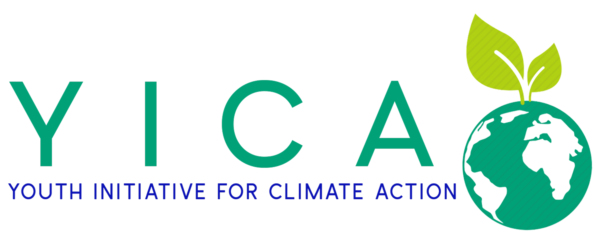

Read official press releases from YICA-SL covering our programmes, partnerships and climate action milestones in Sierra Leone.
Press releases will be posted here soon.
For media enquiries, interview requests or press information, reach out to the YICA-SL communications team.